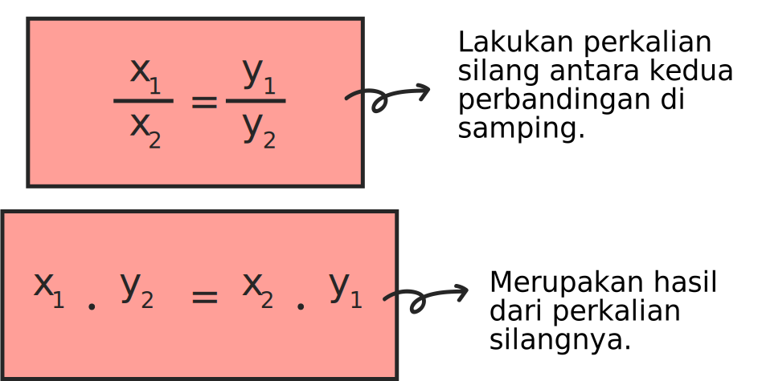

Contoh 1 : Perbandingan Senilai dalam Bentuk Tabel Menggunakan Persamaan $\frac{x_1}{x_2} = \frac{y_1}{y_2}$
→ Soal
Egy ingin membuat jus mangga untuk teman-temannya. Setiap dua gelasnya, ia membutuhkan 1 buah mangga. Jika Egy mempunyai 5 buah mangga, berapa gelas yang akan ia hasilkan?
→ Penyelesaian
• Diketahui :
1 buah mangga menghasilkan = 2 gelas jus mangga
Banyaknya mangga Egy = 5 buah
• Ditanyakan :
Berapa gelas yang akan ia hasilkan jika memiliki 5 buah mangga?
• Jawaban :
Pertama, buatlah terlebih dahulu tabel untuk mendata hal yang sudah kita dapatkan pada soal. Anggap variabel “x” sebagai banyaknya mangganya (buah) dan variabel “y” sebagai banyaknya jus (gelas), dan tabelnya akan seperti ini:
| Banyak Mangga (buah) (x) |
Banyak Jus (gelas) (y) |
|---|---|
| 1 | 2 |
| 5 | y |
Contoh 2 : Perbandingan Senilai dalam Bentuk Grafik
→ Soal
Berdasarkan data yang sudah diperoleh pada contoh soal pertama, buatlah grafik perbandingan senilainya!
→ Penyelesaian
• Diketahui :
1 buah mangga = 2 gelas jus
5 buah mangga = 10 gelas jus
| Banyak Mangga (buah) (x) |
Banyak Jus (gelas) (y) |
|---|---|
| 1 | 2 |
| 5 | 10 |
Kesimpulan
● Perbandingan senilai adalah jika nilai di awal besar, maka nilai di akhir juga akan semakin besar. Begitu pula sebaliknya, jika nilai di awal kecil, maka nilai di akhir juga semakin kecil. Perbandingan senilai juga dapat dikatakan sebagai perbandingan yang mempunyai nilai sama.
● Perbandingan senilai dapat disajikan dalam tiga bentuk, yaitu: perbandingan senilai dalam bentuk tabel, perbandingan senilai dalam bentuk grafik dan perbandingan senilai dalam bentuk persamaan.
● Persamaan perbandingan senilai:

Untuk mengasah ingatan serta pemahamanmu, ayo kerjakan soal-soal latihan pada bagian selanjutnya. Untuk melanjutkan, silakan klik tombol navigasi di bawah ini.